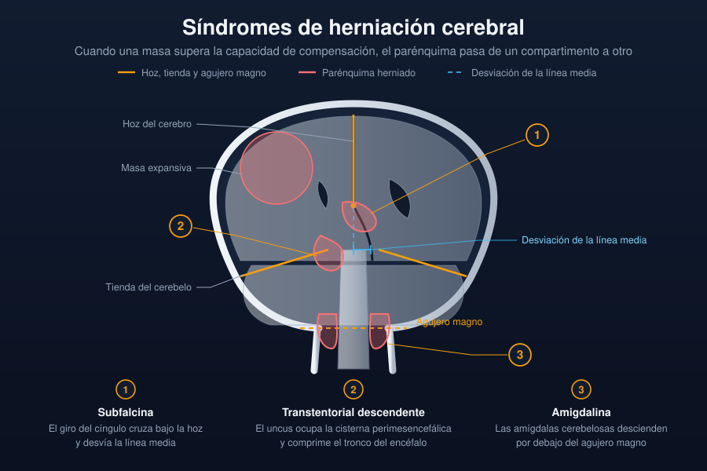

Ficha del catálogo
Síndromes de herniación cerebral
- Sistema
- Nervioso
- Modalidad
- TC
- Región
- Compartimentos intracraneales y cisternas de la base
- Dificultad
- Avanzado
La herniación cerebral es el desplazamiento del parénquima de un compartimento a otro cuando una masa o un edema superan la capacidad de compensación intracraneal. Constituye una urgencia neuroquirúrgica porque comprime estructuras vitales y vasos, y su reconocimiento inmediato en la imagen determina la conducta.
Técnica
Tomografía de cráneo sin contraste como estudio urgente, con revisión sistemática de la línea media, de las cisternas de la base y de la unión craneocervical. La resonancia se reserva para caracterizar la lesión causal cuando el paciente está estabilizado.
Qué observar
- Desviación de la línea media medida a la altura del septum pellucidum
- Estado de las cisternas perimesencefálicas y su borramiento progresivo
- Descenso del uncus temporal hacia la incisura del tentorio
- Dilatación del asta temporal del ventrículo contralateral por atrapamiento
- Descenso de las amígdalas cerebelosas a través del agujero magno
- Infartos secundarios por compresión arterial y hemorragias del tronco
Hallazgos
En la herniación subfalcina el giro del cíngulo cruza bajo la hoz y desplaza la línea media, con dilatación del ventrículo contralateral. En la herniación transtentorial descendente el uncus y el hipocampo ocupan la cisterna perimesencefálica, que se borra de forma progresiva, y el tronco se comprime y rota. La herniación amigdalina muestra las amígdalas por debajo del plano del agujero magno con borramiento de las cisternas de la fosa posterior. Son signos tardíos el infarto en el territorio de la arteria cerebral posterior y la hemorragia del tronco.
Perlas
El borramiento progresivo de las cisternas de la base es un indicador más sensible y precoz de descompensación que la propia medida de la desviación de línea media, por lo que debe evaluarse siempre y describirse de forma explícita. El infarto occipital en un paciente con masa temporal suele indicar que la herniación ya ha comprimido la arteria cerebral posterior.
Diagnóstico diferencial
- Asimetría ventricular constitucional
- No hay masa, edema ni desplazamiento del septum, y las cisternas están conservadas.
- Malformación de la unión craneocervical
- Descenso amigdalar crónico de morfología puntiaguda, sin masa supratentorial ni deterioro agudo.
- Atrofia con dilatación ventricular
- Los surcos están ensanchados y las cisternas amplias, lo contrario del patrón de hipertensión intracraneal.
- Efecto de masa sin herniación
- Existe desplazamiento local pero las cisternas perimesencefálicas permanecen abiertas y simétricas.
Simuladores
- Volumen parcial que simula borramiento cisternal en cortes gruesos
- Cabeza rotada que produce falsa asimetría de las cisternas
- Artefacto de la fosa posterior que oscurece el contorno del tronco
Por modalidad
- TC
- Permite el reconocimiento inmediato de los signos de herniación y de la lesión causal, y guía la decisión quirúrgica urgente.
- RM
- Muestra mejor el compromiso del tronco, los infartos secundarios y la causa subyacente cuando el cuadro no es traumático.
Protocolo
Estudio urgente sin contraste con lectura inmediata que debe informar la lesión causal, la magnitud de la desviación de línea media, el estado de las cisternas de la base, la presencia de hidrocefalia y los signos de sufrimiento del tronco.
Clasificación
Se describen varios patrones según el compartimento implicado, con la herniación subfalcina bajo la hoz, la transtentorial descendente y ascendente a través de la incisura, la amigdalina por el agujero magno, la transalar sobre el ala del esfenoides y la transcraneal a través de un defecto óseo o quirúrgico.
Errores frecuentes
- Informar solo la desviación de línea media sin describir las cisternas
- No reconocer la herniación amigdalina por no revisar la unión craneocervical
- Atribuir a un infarto primario lo que es consecuencia de la compresión vascular por herniación

herniación cerebral cisternas de la base desviación de línea media hipertensión intracraneal urgencia neuroquirúrgica efecto de masa